전기철도기사 (2011-03-20 기출문제)
1과목: 전기철도공학
1. 가공 전차선로에서 양단의 가고가 같고, 전차선이 수평인 경우 x점에서의 행거 길이 [m]는? (단, 경간 중앙에서의 이도를 0.3m, 가고는 1m, 임의의 점 x에서의 이도를 0.15m로 한다.)
- 0.5
- 0.7
- 0.85
- 0.96
(정답률: 알수없음)

2. 에어조인트의 평행부분에서 전차선의 상호간격은 얼마를 표준으로 하는가? (단, 속도등급 200킬로급 이하)
- 150[mm]
- 280[mm]
- 300[mm]
- 400[mm]
(정답률: 알수없음)
3. 고속철도 전차선의 지지점에서 첫 번째 드로퍼간의 간격은?
- 4.0[m]
- 4.5[m]
- 5.0[m]
- 5.5[m]
(정답률: 알수없음)
4. 고정빔의 호칭이 6선용일 때 길이로 맞는 것은?
- 22[m] 초과 26[m] 까지
- 26[m] 초과 30[m] 까지
- 18[m] 초과 22[m] 까지
- 34[m] 초과 38[m] 까지
(정답률: 알수없음)
5. 고속철도용 합성전차선의 최대 경사 간격 [mm]은?
- 50[mm]
- 30[mm]
- 20[mm]
- 10[mm]
(정답률: 알수없음)
6. 레일에서 대지에 누설되는 전기차 귀전류를 변압기 작용에 의해 강제적으로 부급전선에 흡상시켜 통신선로의 유도장애를 경감하는 급전방식은?
- 단권변압기 급전방식
- 흡상변압기 급전방식
- 직접 방식
- 직류 급전방식
(정답률: 알수없음)
7. 교류 강체 가선방식에서 컨덕터 레일구간의 온도변화에 의한 리지드바의 팽창을 상쇄시켜주는 장치는?
- 확장장치
- 직접유도장치
- 건널선장치
- 지상부이행장치
(정답률: 알수없음)
8. 고속철도 전차선의 일반개소 곡선당김장치의 표준길이 [m]는?
- 0.7
- 1.2
- 1.5
- 1.9
(정답률: 알수없음)
9. 전기철도 급전방식에서 직류 급전방식에 속하지 않는 것은?
- 가공단선식
- 가공복선식
- 단권변압기방식
- 제3궤조식
(정답률: 알수없음)
10. 통신유도장해 경감을 위하여 귀선 레일에 병렬로 시설하여 운전용 전기를 변전소로 귀환하게 하는 전선은?
- 흡상선
- 부급전선
- 보조귀선
- 중성선
(정답률: 알수없음)
11. 강제전차선 경간 중앙의 이도는 지지점 간격(경간)의 얼마 이하로 하는가?
- 1000분의 1
- 1000분의 2
- 1000분의 3
- 1000분의 4
(정답률: 알수없음)
12. 연입률의 정의로 옳은 것은?
- 소선의 실제 길이
- 연선의 실제 길이
- 연선의 실제 길이에 대한 소선의 실제 길이 증가 비율
- 소선의 실제 길이에 대한 연선의 실제 길이 증가 비율
(정답률: 알수없음)
13. 직류 1500[V]급전방식에서 전차선로 가압부분과 대지와의 표준이격거리 [mm]는?
- 100[mm]이상
- 150[mm]이상
- 250[mm]이상
- 300[mm]이상
(정답률: 알수없음)
14. 교류 급전방식에서 조가선과 전차선은 몇 [m] 마다 균압하는 것을 표준으로 하고 있는가? (다, 균압 겸용 드롭퍼를 사용하는 구간 제외)
- 100∼150[m]
- 160∼200[m]
- 250∼300[m]
- 350∼450[m]
(정답률: 알수없음)
15. 교류 변전설비 중 주변압기(스코트결선)의 순시최대출력은 정격치에 대한 백분율(%)을 한쪽 상에 대하여 몇 [%]에서 2분간으로 하는가?
- 100
- 200
- 300
- 500
(정답률: 알수없음)
16. 장력조정장치의 X의 값을 구하는 식은? (L:전선의 길이[m], T:현재온도[℃], A:160℃에서의 X값(0.40m))
- X=[(17×10-6×L)×(60℃-T℃)]+A
- X=[(17×10-6+L)×(60℃+T℃)]+A
- X=[(5×17×10-6×L)×(60℃-T℃)]
- X=[(5×17×10-6+L)×(60℃+T℃)]
(정답률: 알수없음)
17. 25[kV]교류강체방식의 브래킷 부품 중 편위 조정을 위하여 R-bar이 위치를 변경할 수 있도록 만든 금구는?
- 꼬리금구
- 머리금구
- 회전금구
- 접지봉연결금구
(정답률: 알수없음)
18. 선로의 궤간이 1435[mm], 곡선반경이 R=1000[mm]인 선로를 70[km/h]로 주행하는데 필요한 캔트[mm]는?
- 약 35
- 약 45
- 약 55
- 약 65
(정답률: 알수없음)
19. 직류전기철도의 강체전차선 가선방식 중 건널선 장치의 편건널선과 Y건널선의 분기선단에는 엔드어프로치하여 설치하되 분기선이 본선의 전차선보다 몇 [mm] 높게 시설하여야 하는가?
- 10
- 20
- 30
- 40
(정답률: 알수없음)
20. 에어섹션개소에서 구분용 애자의 하단은 본선의 전차선 높이에서 몇 [mm]이상으로 시설하여야 하는가?
- 100
- 200
- 300
- 400
(정답률: 알수없음)
2과목: 전기철도 구조물공학
21. 바리니온(Varignon)의 정리에 대한 설명으로 옳은 것은?
- 여러 힘의 한 점에 대한 모멘트의 대수함은 그들 합력의 그 점에 대한 모멘트와 항상 같다.
- 여러 힘의 한 점에 대한 모멘트의 대수함은 그들 합력의 그 점에 대한 모멘트보다 항상 크다.
- 여러 힘의 한 점에 대한 모멘트의 대수함은 그들 합력의 그 점에 대한 모멘트보다 항상 작다.
- 여러 힘의 한 점에 대한 모멘트의 대수함은 그들 합력의 그 점에 대한 모멘트보다 클 수도 있고 작을 수도 있다.
(정답률: 알수없음)
22. 지표면의 높이가 9[m]인 단독지지주에 25[kgf/m]의 수평분포하중이 작용하는 경우 3[m]지점에서의 모멘트 [kgf·m]는?
- 280
- 450
- 504
- 900
(정답률: 알수없음)
23. 그림과 같이 한 점에 작용하는 두 힘의 크기가 40[kg]과 50[kg]의 합력은 약 몇 [kg]인가?
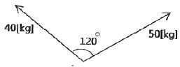
- 44.25
- 45.83
- 46.53
- 47.68
(정답률: 알수없음)
24. 표준장력이 250[kgf]이고 경간이 50[m]인 부급전선 (Al 200mm2)에 풍압하중을 받을 때 이도는 약 몇 [m]인가? (단, 부급전선 (Al 200mm2)의 단위중량은 0.5598[kg/m]이다.)
- 0.35
- 0.70
- 1.⑤
- 1.40
(정답률: 알수없음)
25. 프와송 비(Poisson's ratio)가 0.2일 때 프와송수는?
- 2
- 3
- 5
- 6
(정답률: 알수없음)
26. 조합철주에서 복경사재를 사용하는 경우의 수평면에 대한 경사각도는 몇 도로 하는가?
- 30도
- 35도
- 45도
- 50도
(정답률: 알수없음)
27. 전차선 및 조가선을 정상적으로 인류하기 전에 시행하는 것은?
- Pre-sag 가선
- Slack
- Cant
- Pre-stretch
(정답률: 알수없음)
28. 정 6각형들의 각 절점에 그림과 같이 하중 P가 작용할 때 각 부재에 생기는 인장응력의 크기는?
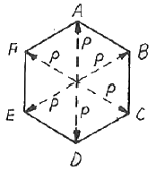
- P
- 2P
- 2/P
- P/√2
(정답률: 알수없음)
29. 단독 지지주의 지면에서 전주의 높이가 10[m], 수평분포하중이 35[kgf/m]라 할 때 5[m] 지점에서의 전단력 [kgf]은?
- 140
- 150
- 165
- 175
(정답률: 알수없음)
30. 가공전차선로에서 전선에 작용하는 수평장력이 1300[kgf]일 때 지선용 재료의 항장력 [kgf]은 얼마이상이어야 하는가? (단, 지선과 전주의 각도가 45°이다.)
- 약 3596
- 약 3796
- 약 4596
- 약 5120
(정답률: 알수없음)
31. 그림과 같은 라멘의 부정정차수는?
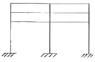
- 9차
- 12차
- 15차
- 18차
(정답률: 알수없음)
32. 전철주 기초 중 특수기초에 해당하지 않는 것은?
- 앵커기초
- 우물통기초
- 쇄석기초
- 푸싱기초
(정답률: 알수없음)
33. 전기철도 구조물에 외력이 작용하면 구조물은 평형상태를 유지하기 위하여 구조물 내부에서 외력의 크기와 같고 방향이 반대인 저항력이 생기는데 이것을 무엇이라 하는가?
- 우력
- 응력
- 모멘트
- 힘
(정답률: 알수없음)
34. 힘의 3요소는?
- 크기, 방향, 작용선
- 크기, 방향, 합력
- 크기, 각도, 방향
- 크기, 방향, 작용점
(정답률: 알수없음)
35. 전철용 전주가 단면이 20[cm]×20[cm]이고, 이 전주에 40[tf]의 압축력이 작용할 때 이 전주의 압축응력 [kgf/cm2]은?
- 50
- 80
- 100
- 500
(정답률: 알수없음)
36. 가공전차선로에서 전선의 안전율(Fs)은?
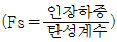
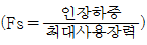
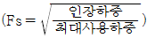
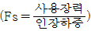
(정답률: 알수없음)
37. 전주 경간이 50[m], 전선의 장력이 1200[kgf], 곡선반지름이 600[m]일 때 곡선로의 수평장력 [kgf]은?
- 83.3
- 93.3
- 100
- 125.5
(정답률: 알수없음)
38. 전주 또는 고정빔 등에 취부하여 급전선, 부급전선, 보호선 등을지지 또는 인류하기 위한 구조물은?
- 전주 대용물
- 하수강
- 완철
- 평형틀
(정답률: 알수없음)
39. 1차원 구조물 중 뼈대 구조인 것은?
- 봉(rod)
- 기둥(column)
- 보(beam)
- 트러스(truss)
(정답률: 알수없음)
40. 지선의 취부각도가 30°이고 전선의 최대장력이 1000[kgf]일 때, 지선이 받는 최대장력 [kgf]은?
- 500
- 1000
- 1500
- 2000
(정답률: 알수없음)
3과목: 전기자기학
41. 다음과 같은 맥스웰(Maxwell)의 미분형 방정식에서 의미하는 법칙은?
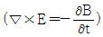
- 패러데이의 법칙
- 암페어의 주회적분법칙
- 가우스의 법칙
- 비오사바르의 법칙
(정답률: 알수없음)
42. 공기 중에서 5V, 10V로 대전된 반지름 2cm, 4cm의 2개의 구를 가는 철사로 접속했을 때 공통 전위는 몇 [V]인가?
- 6.25
- 7.5
- 8.33
- 10
(정답률: 알수없음)
43. 자기 인덕턴스 L[H]인 코일에 전류 I[A]를 흘렸을 때, 자계의 세기가 H[AT/m]였다. 이 코일을 진공 중에서 자화시키는데 필요한 에너지 밀도[J/m3는?
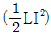
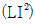
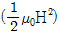
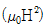
(정답률: 알수없음)
44. 전류 2π[A]가 흐르고 있는 무한직선도체로부터 1m 떨어진 P점의 자계의 세기는?
- 1[A/m]
- 2[A/m]
- 3[A/m]
- 4[A/m]
(정답률: 알수없음)
45. 그림과 같은 유한길이의 솔레노이드에서 비투자율이 μs인 철심의 단면적이 S[m2]이고 길이가 l[m]인 것에 코일을 N회 감고 I[A]를 흘릴 때 자기저항 Rm[AT/Wb]은 어떻게 표현되는가?
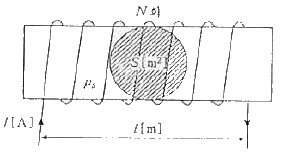
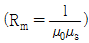
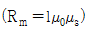
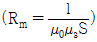
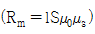
(정답률: 알수없음)
46. 무한 직선도선이 λ[C/m]의 선밀도 전하를 가질 때 r[m]의 점 P의 전계 E는 몇 [V/m]인가?
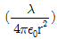
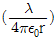
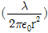
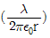
(정답률: 알수없음)
47. 간격 d[m]인 2개의 평행판 전극 사이에 유전율 ε의 유전체가 있다. 전극사이에 전압 Vmcoswt[V]를 가했을 때 변위전류 밀도는 몇 [A/m2]인가?
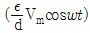
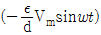
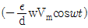
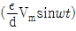
(정답률: 알수없음)
48. 자기인덕턴스와 상호인덕턴스와의 관계에서 결합계수 k의 값은?
- 0 ≤ k ≤ 1/2
- 0 ≤ k ≤ 1
- 1 ≤ k ≤ 2
- 1 ≤ k ≤ 10
(정답률: 알수없음)
49. 철심을 넣은 환상 솔레노이드의 평균 반지름은 20cm이다. 코일에 10A의 전류를 흘려 내부자계의 세기를 2000At/m로 하기 위한 코일의 권수는 약 몇 회인가?
- 200
- 250
- 300
- 350
(정답률: 알수없음)
50. 진공 중에서 내구의 반지름 a=3cm, 외구의 반지름 b=9cm인 두 동심구사이의 정전용량은 몇 [pF]인가?
- 0.5
- 5
- 50
- 500
(정답률: 알수없음)
51. 평등 자계를 얻는 방법으로 가장 알맞은 것은?
- 길이에 비하여 단면적이 충분히 큰 솔레노이드에 전류를 흘린다.
- 길이에 비하여 단면적이 충분히 큰 원통형 도선에 전류를 흘린다.
- 단면적에 비하여 길이가 충분히 긴 솔레노이드에 전류를 흘린다.
- 단면적에 비하여 길이가 충분히 긴 원통형 도선에 전류를 흘린다.
(정답률: 알수없음)
52. 전기 쌍극자(electric dipole)의 중점으로부터 거리 r[m] 떨어진 P점에서 전계의 세기는?
- r에 비례한다.
- r2에 비례한다.
- r2에 반비례한다.
- r3에 반비례한다.
(정답률: 알수없음)
53. 무한 평면 도체표면에서 수직거리 d[m] 떨어진 곳에 점전하 +Q[C]이 있을 때 영상전하(image charge)와 평면도체간에 작용하는 힘 F[N]은 어느 것인가?
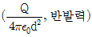
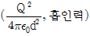
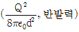
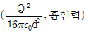
(정답률: 알수없음)
54. 정전용량이 1㎌인 공기콘덴서가 있다. 이 콘덴서 판간의 1/2인 두께를 갖고 비유전율 εr 인 유전체를 그 콘덴서의 한 전극면에 접촉하여 넣었을 때 전체의 정전용량은 몇 [㎌]이 되는가?
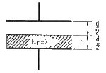
- 2㎌
- 1/2㎌
- 4/3㎌
- 5/3㎌
(정답률: 알수없음)
55. 장성체에 외부의 자계 H0를 가하였을 때 자화의 세기 J와의 관계식은? (단, N은 강자율, μ는 투자율이다.)
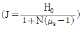
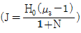
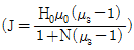
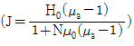
(정답률: 알수없음)
56. 고유저항이 1.7×10-8Ωm인 구리의 100kHz 주파수에 대한 표피의 두께는 약 몇 [mm]인가?
- 0.21
- 0.42
- 2.1
- 4.2
(정답률: 알수없음)
57. 공기 중에 그림과 같이 가느다란 전선으로 반경 a인 원형코일을 만들고, 이것에 대한 Q가 균일하게 분포하고 있을 때 원형코일의 중심축상에서 중심으로부터 거리 x만큼 떨어진 P점의 전계의 세기는 몇 [V/m]인가?
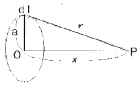
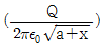
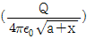
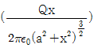
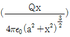
(정답률: 알수없음)
58. E=i+2j+3k[V/cm]로 표시되는 전계가 있다. 0.01[μC]의 전하를 원점으로부터 3i[m]로 움직이는데 필요한 일은 몇 [J]인가?
- 3×10-8
- 3×10-7
- 3×10-6
- 3×10-5
(정답률: 알수없음)
59. 비투자율 350인 환상철심 중의 평균자계의 세기가 280AT/m일 때 자화의 세기는 약 몇 [Wb/m2]인가?
- 0.12Wb/m2
- 0.15Wb/m2
- 0.18Wb/m2
- 0.21Wb/m2
(정답률: 알수없음)
60. 유전율이 각각 ε1, ε2인 두 유전체가 접한 경계면에서 전하가 존재하지 않는다고 할 때 유전율이 ε1인 유전체가 유전율이 ε2인 유전체로 전계 E1이 입사각 θ1=0°로 입사할 경우 성립되는 식은?
- E1 = E2
- E1 = ε1ε2E2
- E1/E2 = ε1/ε2
- E2/E1 = ε1/ε2
(정답률: 알수없음)
4과목: 전력공학
61. 발전기나 변압기의 내부고장 검출에 가장 많이 사용되는 계전기는?
- 역상계전기
- 비율차등계전기
- 과전압계전기
- 과전류계전기
(정답률: 알수없음)
62. 직접접지방식에 대한 설명 중 틀린 것은?
- 애자 및 기기의 절연수준 저감이 가능하다.
- 변압기 및 부속설비의 중량과 가격을 저하시킬 수 있다.
- 1상 지락사고 시 지락전류가 작으므로 보호계전기 동작이 확실하다.
- 지락전류가 저역율 대전류이므로 과도안정도가 나쁘다.
(정답률: 알수없음)
63. 전력선에 영상전류가 흐를 때 통신선로에 발생되는 유도 장해는?
- 고조파유도장해
- 전력유도장해
- 정전유도장해
- 전자유도장해
(정답률: 알수없음)
64. 페란티(ferranti)효과의 발생 원인은?
- 선로의 저항
- 선로의 인덕턴스
- 선로의 정전용량
- 선로의 누설 컨덕턴스
(정답률: 알수없음)
65. 승압기에 의하여 전압 Ve에서 Vh로 승압할 때, 2차 정격전압 e, 자기용량 W인 단상 승압기가 공급할 수 있는 부하 용량은 어떻게 표현되는가?
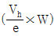
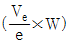
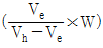
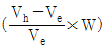
(정답률: 알수없음)
66. 전자계산기에 의한 전력조류 계산에서 슬랙(slack) 모선의 지정값은? (단, 슬랙모선을 기준모선으로 한다.)
- 유효전력과 무효전력
- 모선 전압의 크기와 유효전력
- 모선 전압의 크기와 무효전력
- 모선 전압의 크기와 모선 전압의 위상각
(정답률: 알수없음)
67. 공장이나 빌딩에서 전압을 220V에서 380V로 승압하여 사용할 때, 이 승압의 이유로 가장 타당한 것은?
- 아크 발생 억제
- 배전 거리 증가
- 전력 손실 경감
- 기준충격절연강도 증대
(정답률: 알수없음)
68. 직류 2선식 대비 전선 1가닥 당 송전 전력이 최대가 되는 전송 방식은? (단, 선간전압, 전송전류, 역률 및 전송거리가 같고 중성선은 전력선과 동일한 굵기이며 전선은 같은 재료를 사용하고, 교류 방식에서 cosθ=1로 한다.)
- 단상 2선식
- 단상 3선식
- 3상 3선식
- 3상 4선식
(정답률: 알수없음)
69. 파동임피던스 Z1=400Ω인 가공선로에 파동임피던스 50Ω인 케이블을 접속하였다. 이 때 가공선로에 e1=80kV인 전압파가 들어왔다면 접속면에서의 전압의 투과파는 약 몇 [kV]가 되겠는가?
- 17.8
- 35.6
- 71.1
- 142.2
(정답률: 알수없음)
70. 송전단전압 3300V, 길이 3km인 고압 3상배전선에서 수전단전압을 3150V로 유지하려고 한다. 부하전력 1000kW, 역률 0.8(지상)이며 선로의 리액턴스는 무시한다. 이때 적당한 경동선의 굵기 [mm2]는? (단, 경동선의 저항률은 1/22[Ωmm2/m]이다.)
- 100
- 115
- 130
- 150
(정답률: 알수없음)
71. 회전속도의 변화에 따라서 자동적으로 유량을 가감하는 것은?
- 예열기
- 급수기
- 여자기
- 조속기
(정답률: 알수없음)
72. SF6가스차단기에 대한 설명으로 옳지 않은 것은?
- 공기에 비하여 소호능력이 약 100배 정도이다.
- 절연거리를 적게 할 수 있어 차단기 전체를 소형, 경량화 할 수 있다.
- SF6가스를 이용한 것으로서 독성이 있으므로 취급에 유의하여야 한다.
- SF6가스 자체는 불활성기체이다.
(정답률: 알수없음)
73. 증기압, 증가 온도 및 진공도가 일정할 때에 추기할 때는 추기하지 않을 때보다 단위 발전량 당 증기 소비량과 연료소비량은 어떻게 변화하는가?
- 증기 소비량, 연료 소비량은 다 감소한다.
- 증기 소비량은 증가하고 연료 소비량은 감소한다.
- 증기 소비량은 감소하고 연료 소비량은 증가한다.
- 증기 소비량, 연료 소비량은 다 증가한다.
(정답률: 알수없음)
74. 이상 전압에 대한 방호장치로 거리가 먼 것은?
- 피뢰기
- 방전코일
- 서지흡수기
- 가공지선
(정답률: 알수없음)
75. 3상 154kV 송전선의 일반회로정수가 A=0.900, B=150, C=j0.901×10-3, D=0.930 일 때 무부하시 송전단에 154kV를 가했을 때 수전단 전압은 몇 [kV]인가
- 143
- 154
- 166
- 171
(정답률: 알수없음)
76. 피상전력 P[kVA], 역률 cosθ인 부하를 역률 100%로 개선하기 위한 전력용콘덴서의 용량은 몇 [kVA]인가?
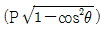
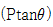
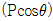
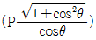
(정답률: 알수없음)
77. 전력선과 통신선사이에 그림과 같이 차폐선을 설치하며 각 선사이의 상호임피던스를 각각 Z12, Z1s, Z2s라 하고 차폐선 자기임피던스를 Zs라 할 때 저감계수를 나타낸 식은?
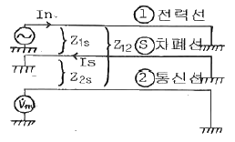
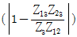
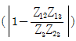
(정답률: 알수없음)
78. 저압 뱅킹방식의 장점이 아닌 것은?
- 전압강하 및 전력손실이 경감된다.
- 변압기 용량 및 저압선 동량이 절감된다.
- 부하 변동에 대한 탄력성이 좋다.
- 경부하시의 변압기 이용 효율이 좋다.
(정답률: 알수없음)
79. 가스냉각형 원자로에 사용하는 연료 및 냉각재는?
- 천연우라늄, 수소가스
- 농축우라늄, 질소
- 천연우라늄, 이산화탄소
- 농축우라늄, 흑연
(정답률: 알수없음)
80. 다중접지 계통에 사용되는 재폐로 기능을 갖는 일종의 차단기로서 과부할 또는 고장잔류가 흐르면 순시동작하고, 일정시간 후에는 자동적으로 재폐로 하는 보호기기는?
- 리클로저
- 라인 퓨즈
- 섹셔널라이저
- 고장구간 자동개폐기
(정답률: 알수없음)
가고가 1m이므로, x점에서의 행거 길이는 x점에서의 이도와 경간 중앙에서의 이도의 합인 0.3m에서 빼준 값이다. 즉, 0.3m - 0.15m = 0.15m이다.
따라서 정답은 0.15m를 2로 나눈 값인 0.75m가 아니라, 경간 중앙에서의 이도를 빼준 값인 0.15m를 2로 나눈 값에서 다시 0.1m를 더한 0.85m이 된다.